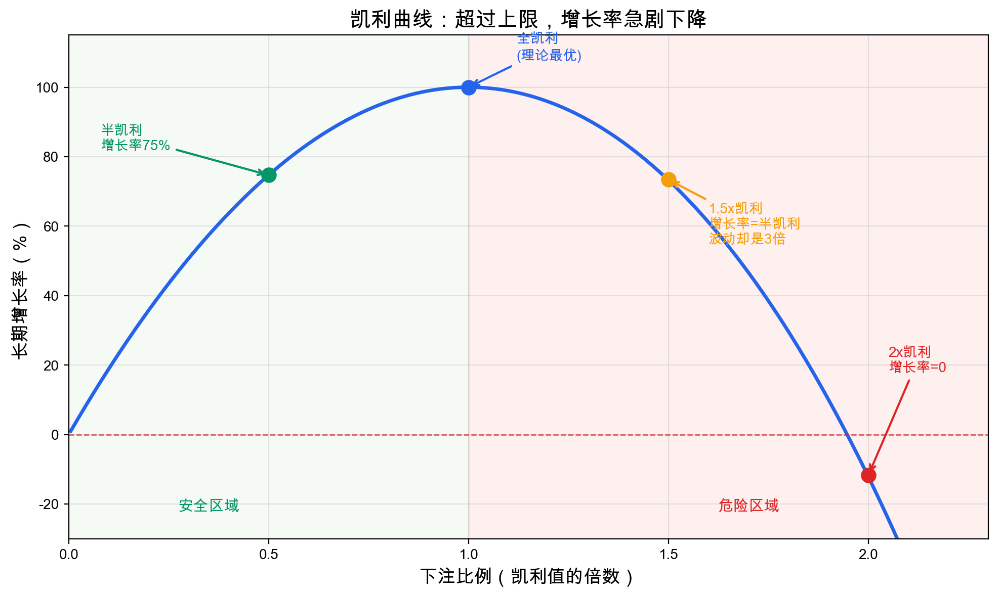
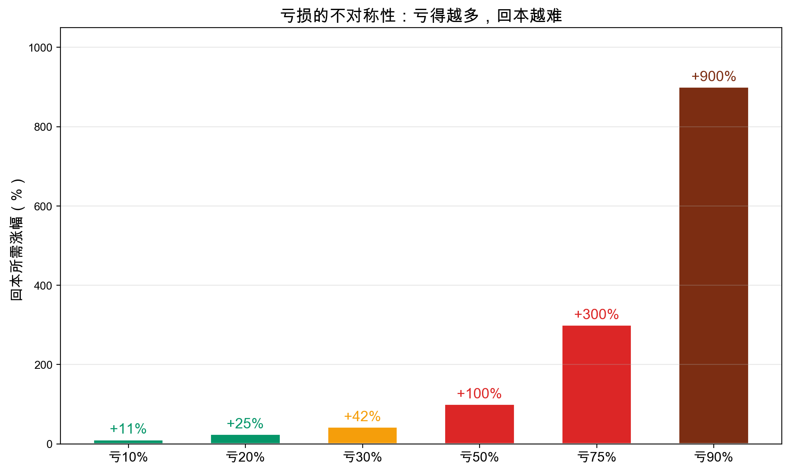
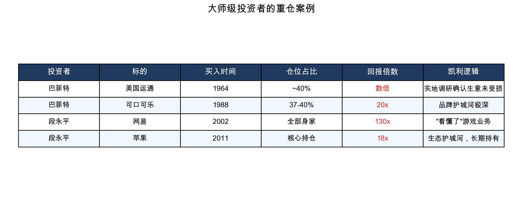

假设有这样一个投资机会：每次下注，赢的概率是60%，赢了赚一倍，输了赔光本次下注。也就是说，每投100块，数学上平均能赚20块——这是一个明显对你有利的游戏。
如果你每次都把全部资金押上去呢？赢三次，资金翻8倍——但只要输一次，就清零了。而40%的失败概率意味着，连赢的次数越多，那一次致命的失败就越确定会到来。玩得足够久，破产是必然的。
这不是极端假设。1998年，长期资本管理公司的合伙人包括两位诺贝尔经济学奖得主，他们的策略确实能赚钱——但25倍杠杆下，一次俄罗斯债务危机就让46亿美元灰飞烟灭。他们的错误不是方向看错了，而是押得太重了。
问题不在于"该不该投"，而在于"该投多少"。六十多年前，一个信息论学者给出了精确答案。
凯利公式：到底该押多少
1956年，贝尔实验室的物理学家约翰·凯利（John Kelly）解决了一个问题：在一个胜率和赔率已知的重复博弈中，每次应该押多少比例的资金，才能让长期财富增长最快？
答案用一句大白话说：用赢面减去输面，再除以赔率，就是你该押的比例。
写成公式是：
最优仓位 = （赔率 × 胜率 - 败率）÷ 赔率
用字母表示就是 f = (b×p - q) / b，其中 f 是最优下注比例，b 是赔率（赢了赚多少倍），p 是胜率，q 是败率（1 - p）。
回到开头的例子：赢赚一倍（b=1），胜率60%（p=0.6），败率40%（q=0.4）。代入：f = (1×0.6 - 0.4) / 1 = 20%。凯利公式告诉你，每次押总资金的20%，是长期增长最快的策略。
再换一个：赢赚两倍（b=2），胜率50%。f = (2×0.5 - 0.5) / 2 = 25%。赔率越好，可以押更多。
押少了，增长慢。押多了呢？不是增长更快——而是增长变慢，甚至倒退。这才是凯利公式最反直觉的地方。
超过上限，必然毁灭

下面这张表是全文最重要的信息：
| 下注策略 | 长期增长率 | 波动率 | 意味着什么 |
|---|---|---|---|
| 半凯利（0.5倍） | 全凯利的75% | 全凯利的50% | 用一半波动换四分之三的增长 |
| 全凯利（1倍） | 100%（理论最优） | 100% | 增长最快但颠簸极大 |
| 1.5倍凯利 | 全凯利的75% | 全凯利的150% | 增长率和半凯利一样，波动却是三倍 |
| 2倍凯利 | 零 | 全凯利的200% | 长期增长率为零，白忙一场 |
| 超过2倍 | 负数 | 更高 | 长期必然破产 |
请注意1.5倍那一行：增长率和半凯利完全一样，但波动率是半凯利的三倍。过度下注不仅没好处，还要承受大得多的痛苦。
2倍凯利更极端——每笔交易都有正期望，但长期增长率为零。超过2倍，即便每笔都赚钱，长期也必然亏光。
这就是开头那个悖论的数学答案。
华尔街用真金白银验证过两次：
长期资本管理公司（LTCM），1998年。 25比1的杠杆，四个月亏掉46亿美元，差点引发全球金融系统崩盘。美联储协调十四家银行才收场。
比尔·黄的Archegos基金，2021年。 通过衍生品建立极高杠杆，峰值管理360亿美元。两天之内，归零。给银行造成超过100亿美元损失。黄本人后被判十项罪名。
为什么亏损50%比你想的严重得多
过度下注之所以致命，根源在于亏损的数学不对称性。

| 亏损幅度 | 回本需要涨多少 |
|---|---|
| -10% | +11% |
| -20% | +25% |
| -30% | +43% |
| -50% | +100% |
| -75% | +300% |
| -90% | +900% |
亏10%，涨11%就回来了，看起来差不多。但亏50%，需要翻倍才能回本。亏75%，需要涨三倍。亏90%——需要涨九倍。
原因很简单：投资是乘法不是加法。亏50%是乘以0.5，涨50%是乘以1.5，0.5×1.5=0.75，不等于1。亏损缩小了本金，从更小的基数上涨回同样的绝对值，需要更大的百分比。
这就是凯利公式存在的数学原因：它天然避免了大幅回撤。 凯利公式最大化的是对数增长率（几何平均），而不是算术平均。对数增长率天然惩罚大幅波动——因为在乘法世界里，一次大亏会抵消很多次小赢。
所以凯利公式不是一个"帮你赚更多"的公式，而是一个"帮你不亏太多"的公式。这两件事在长期复利中是同一件事。
大师们的实战：看懂了，才敢下重注
如果凯利公式只是数学游戏，它不会引起投资者的兴趣。但巴菲特、芒格、段永平的实战操作，几乎就是凯利公式的活教材——虽然他们可能从未用过这个公式。
先看一个投资版的凯利公式。当收益不是简单的"赢/输"而是连续分布时（股票就是这样），凯利公式变为：
最优仓位 = （预期收益率 - 无风险利率）÷ 波动率的平方
用字母表示就是 f = (预期收益 - 无风险利率) / 方差。大白话：超额收益越高、波动越小，就应该仓位越重。
这个公式还有一个信息论的解读：你的最优增长率等于你相对市场的信息优势。如果你对一家公司的理解不比市场更深，最优仓位是零。
现在用这个框架审视大师们的操作：

巴菲特买美国运通，1964年。
1963年运通因"色拉油丑闻"股价腰斩。巴菲特亲自去餐厅和商店观察，发现人们照常使用运通卡——生意没有受损，只是市场恐慌。
用凯利框架分析：巴菲特判断运通的内在价值远高于市价（预期收益极高），而他通过实地调研确认了生意没有受损（在他眼中波动很小）。公式的分子大、分母小，凯利值很高。他投入约1300万美元，占合伙基金的40%。结果：获利数倍。
段永平抄底网易，2002年。
网易因财务问题股价跌到不足1美元，面临退市。段永平研究后判断网易的游戏业务被严重低估。他凑了200万美元（含100万借款），在0.5-0.8美元之间买入。
用凯利框架分析：段永平判断网易退市概率很低、游戏业务价值远高于市价（预期收益极高）。他自称"看懂了"这门生意（在他眼中波动接近零）。凯利值支持重仓。结果：网易最高涨到100多美元，获利约130倍，赚了大约2亿美元。
段永平买苹果，2011年。
以约13.75美元均价买入，持有14年几乎没动过。赚了约18倍。
这三个案例有一个共同点：他们不是在赌，而是在信息优势极大的前提下按逻辑加仓。 看懂了生意，波动在他们眼中就不是风险，而只是价格的摇摆。
芒格说得直接："过度分散的想法是疯狂的。广泛分散化必然包括投资平庸企业，只能保证平庸的结果。"
段永平更朴素："看懂生意比较难，看不懂的拿住比较难，大部分人拿不住是因为看不懂。"
用凯利公式翻译这两句话：看懂了，波动就小，凯利值就高，就该集中。看不懂，波动就大，凯利值就低，就该分散或者不碰。
半凯利：实战中真正该用的策略
理论上全凯利增长最快。但几乎所有严肃的实践者都推荐只用一半。
第一，你的参数估计一定有误差。 在赌场里，胜率和赔率可以精确计算。在股市里，预期回报和波动率都是猜的。如果你高估了自己的优势，全凯利就变成了超凯利——而我们已经知道超凯利的下场。半凯利给误差留了缓冲区。
第二，增长率的损失远小于波动率的降低。 半凯利只牺牲25%的增长率，却降低50%的波动。用75%的增长换50%的波动——这笔交易极其划算。
第三，心理承受力有限。 全凯利在极端情况下可能回撤50%以上。半凯利把回撤控制在人类心理可以承受的范围内。
数学家罗坦多和索普的研究证实：半凯利有约90%的概率避免毁灭性亏损，全凯利只有50%。
说到索普——他可能是凯利公式最伟大的实践者。这位MIT数学教授1962年出版了《击败庄家》，用凯利公式指导21点下注，被赌场列入黑名单。之后转战华尔街，创立基金连续19年年化回报15%-20%，230个月中只有3个月亏损。1973-74年大熊市标普跌42%，他逆势盈利。
索普本人也推荐半凯利。理论上的最优和现实中的最优，中间隔着参数误差、黑天鹅事件和人的心理极限。
不亏钱，才是最好的赚钱策略
回到开头的问题：为什么每笔都有正期望，长期却可能破产？
因为投资不是单次博弈，而是无限次重复博弈。在重复博弈中，决定最终结果的不是算术平均（期望值），而是几何平均（复合增长率）。凯利公式最大化的正是几何平均。
具体到实战，三条原则：
第一，没有信息优势，就不要下注。 凯利公式清楚地说：当你对一家公司的理解不超过市场共识时，最优仓位是零。这和段永平"不懂不碰"完全一致。
第二，即使有优势，也只用半凯利。 你对自己优势的估计几乎必然偏高。用一半仓位，给错误留够空间。
第三，永远不要超过凯利上限。 这是不可逾越的红线。超过2倍凯利，不管分析多正确，长期结果都是归零。LTCM和Archegos不是败给了判断力，是败给了仓位。
巴菲特说投资的第一条规则是"不要亏钱"，第二条是"不要忘记第一条"。这两条规则听起来像废话，但凯利公式用数学证明了它是最深刻的投资智慧。
投资比拼的不是谁赚得最猛，而是谁能留在牌桌上。活下去，比什么都重要。
参考资料： Kelly, J.L. "A New Interpretation of Information Rate." Bell System Technical Journal, 1956. Thorp, E.O. "Beat the Dealer." Random House, 1962. Poundstone, W. "Fortune's Formula." Hill and Wang, 2005.